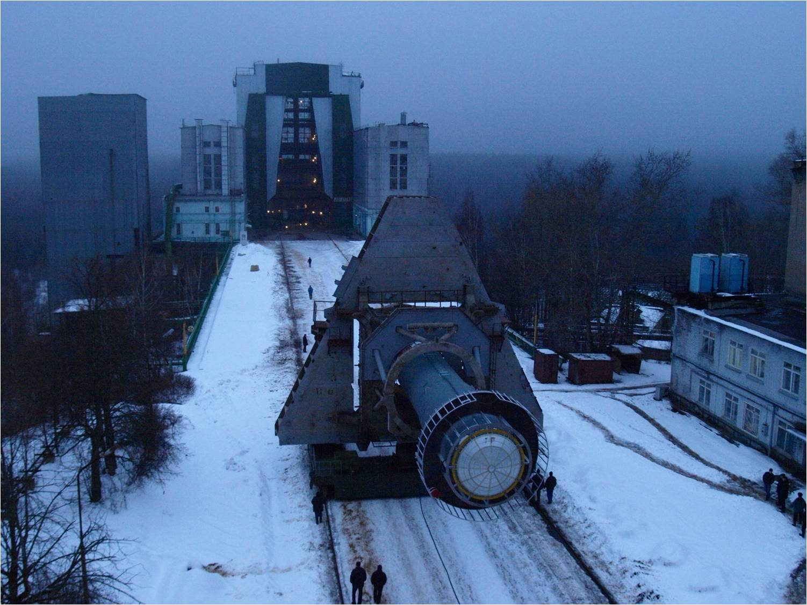
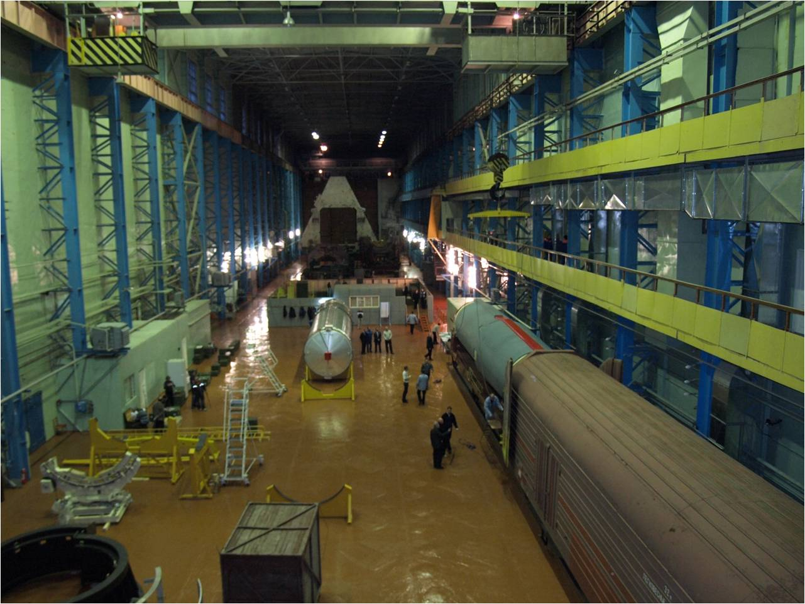

Стенд ИС-102
Был создан в 1956 году для проведения испытаний ступеней ракет с максимальными габаритами 30х3,9 метров в вертикальном положении на компонентах керосин-жидкий кислород с максимальной тягой двигателя - 600 тонн. При реконструкции под испытания блока II ступени РН Н-1 стенд был доработан для огневых испытаний ракетных блоков с максимальными габаритами до 40×9 метров с тягой до 1200 тонн. В дальнейшем реконструкции стенда проводились в обеспечение стендовых испытаний конкретных изделий.
- 1956-1957 гг. - огневые стендовые испытания (ОСИ) баллистической ракеты Р7 для военного применения и пилотируемых полетов в космос.
- 1959-1962 гг. - ОСИ боевой ракеты Р9
- 1981-1986 гг. – ХСИ и ОСИ РН «Зенит» на штатную продолжительность работы РД с тягой 750 тонн.
- 1965-1966 гг. – ОСИ ракеты УР-500 «Протон» на токсичных компонентах (после соответствующей реконструкции ИС-102).
- 1971-1972 гг. – отработка системы питания на токсичных компонентах для боевой ракеты шахтного базирования Р36М «Сатана» (холодные испытания).
- 1965-1974 гг. – комплексная отработка блоков РН «Н-1» (Лунная программа).
- 1981-1986 гг. – ХСИ и ОСИ РН «Зенит» на штатную продолжительность работы РД с тягой 750 тонн
- 1986 г. – ХСИ и ОСИ модельной ДУ (М 1:10) МКС «Энергия-Буран».
- 2005-2006 гг. – два ХСИ и два ОСИ 3-й ступени РН «Союз 2-1б».
- 2009 г. – два ХСИ и три ОСИ УРМ-1 РН «Ангара-А5»(изделие И1А1С).
- 2010 г. – четыре ХСИ и ОСИ УРМ-2 РН «Ангара-А5»(изделие И5А2С).
- 2012-2013 гг. – два ХСИ и три ОСИ 1-й ступени РН «Союз 2-1в».
- 2020 г. – три ХСИ и ОСИ 2-й ступени РН «Ангара-1.2».
В состав ИС-102 входит Монтажно-испытательный корпус (МИК)
Работы выполняемые в МИК:
- выгрузка изделия (мостовыми кранами грузоподъемностью 50 т и 125 т)
- досборка изделия
- проведение электрических проверок и пневмопроверок изделия при входном контроле
- установка изделия в силовой корсет и на транспортно-установочную тележку
- прием изделия после испытаний
- проведение проверок при выходном контроле
- подготовка к отправке на завод-изготовитель